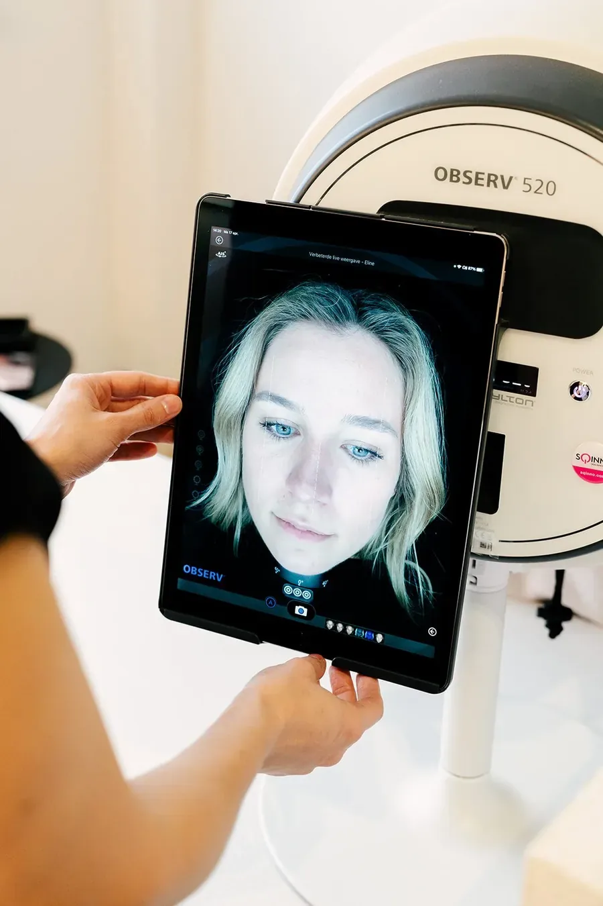
Hier start jeHuidanalyse
Met de Observ 520 zien we wat het blote oog niet ziet. Zo weten we waar we aan beginnen.
Ik ben Inge. Ik kijk eerst écht naar je huid, en pas daarna kiezen we samen wat ze nodig heeft. Geen standaardbehandeling, wel een plan dat bij jou past.
Persoonlijke begeleiding door Inge, van analyse tot resultaat.
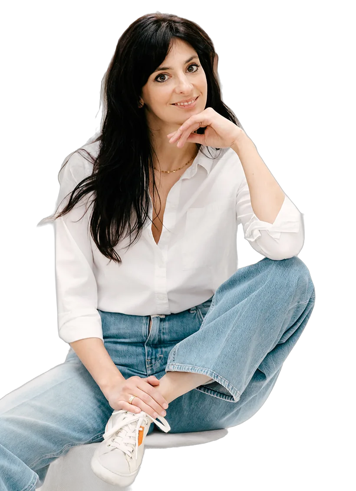
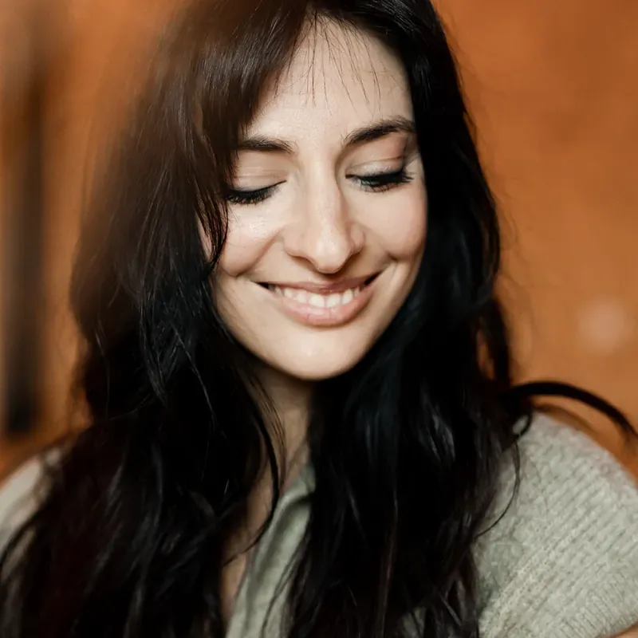
Al meer dan twintig jaar werk ik als huidspecialiste. Doorheen de jaren groeide Mooi Mooi uit tot een Skin Confidence Studio: een plek waar het niet alleen draait om verzorging, maar vooral om hoe jij je voelt in je eigen huid.
Als huidcoach begeleid ik je persoonlijk. Met Skin Recovery help ik ook bij littekens, striemen en areola pigmentatie.
Van een diepe reiniging tot microneedling. Ik vertel je eerlijk wat zin heeft voor jouw huid, en wat niet.

Hier start jeMet de Observ 520 zien we wat het blote oog niet ziet. Zo weten we waar we aan beginnen.
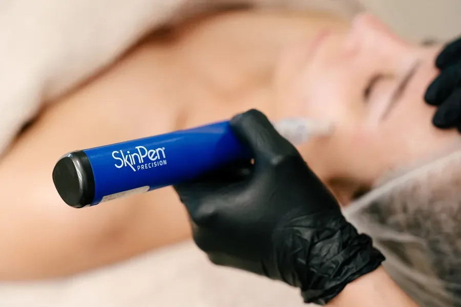
HuidverbeteringMicroneedling die je huid zelf aan het werk zet. Voor littekens, fijne lijntjes en een gladdere huid.
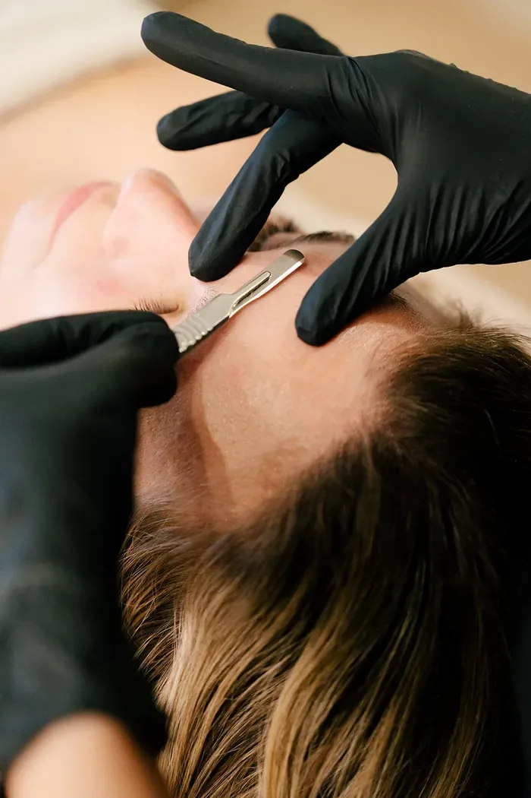
HuidverbeteringDode huidcellen en donshaartjes weg. Je huid voelt zacht en je make-up ligt mooier.
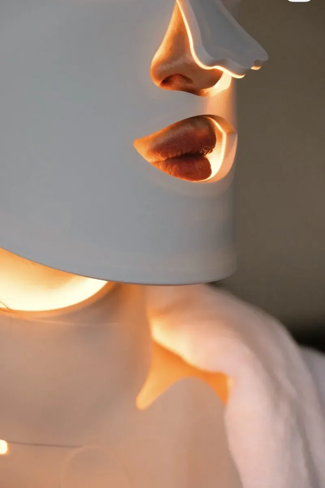
HuidverjongingEven liggen onder het licht. Rustig voor je huid, en een fijne aanvulling op je traject.
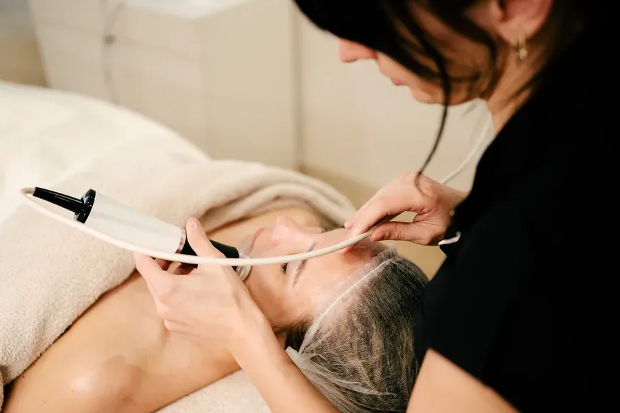
HuidverjongingExfoliëren en zuurstof in één behandeling. Je gaat naar huis met een frisse glow.
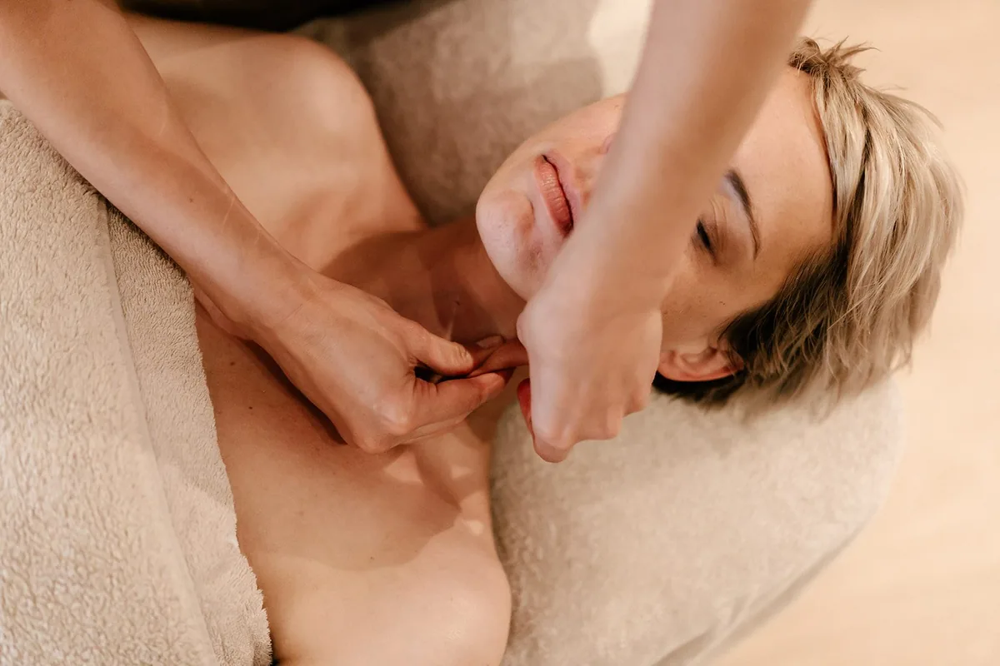
Me-timeVerzorging en massage voor je gezicht. Het uurtje waar je de hele week naar uitkijkt.
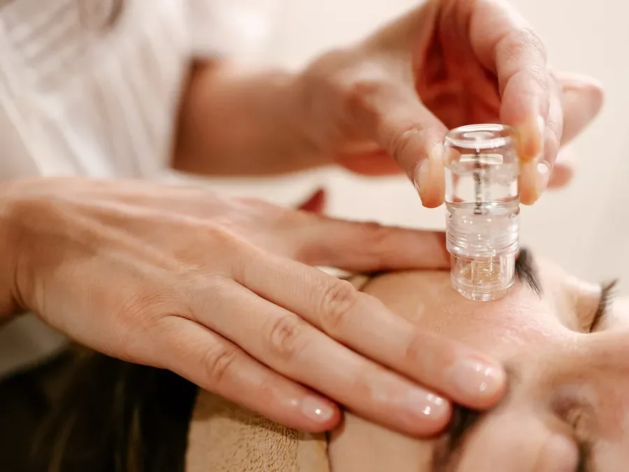
HuidverjongingEen stevige boost voor een vermoeide of doffe huid. Ideaal voor een feest of na een drukke periode.
Met de juiste technieken help ik het natuurlijke herstel van je huid op weg.
Een huid verbeter je niet met één behandeling. Daarom volg ik je op, van de eerste analyse tot lang nadat je resultaat er is.
Haarscherpe foto's van je huid brengen alles in kaart, ook wat je zelf nog niet ziet.
Thuisverzorging, behandelingen in de studio en waar nodig voedingsadvies. Alles op maat.
Net als sporten voor je conditie: je huid blijft goed met de juiste zorg. Ik help je het vol te houden.
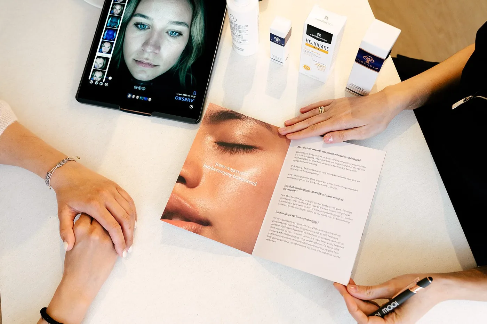
Jouw plan, zwart op witEen rustige studio, warme handdoeken en alle tijd voor jou. Zo voelt een afspraak bij Mooi Mooi.
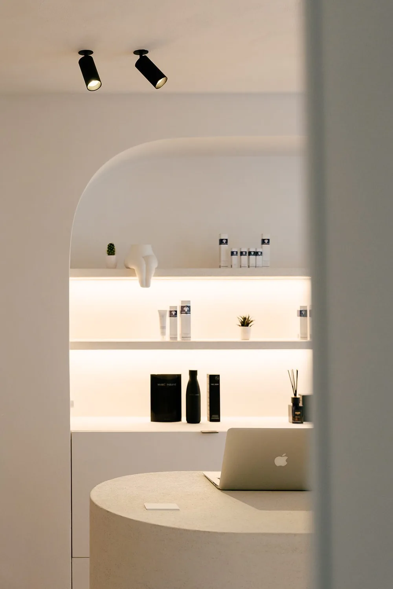
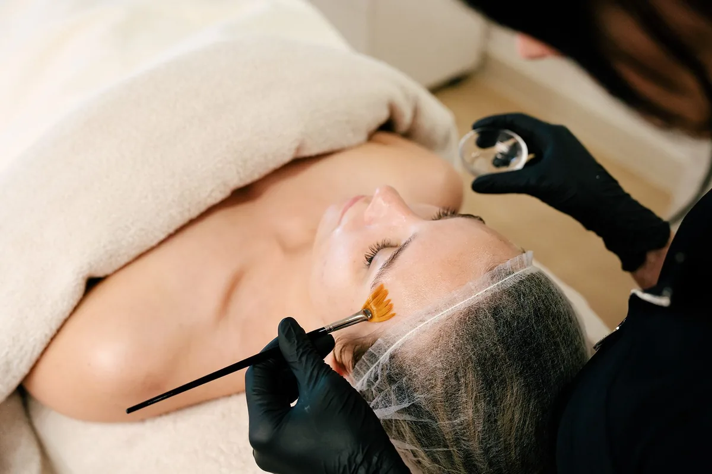
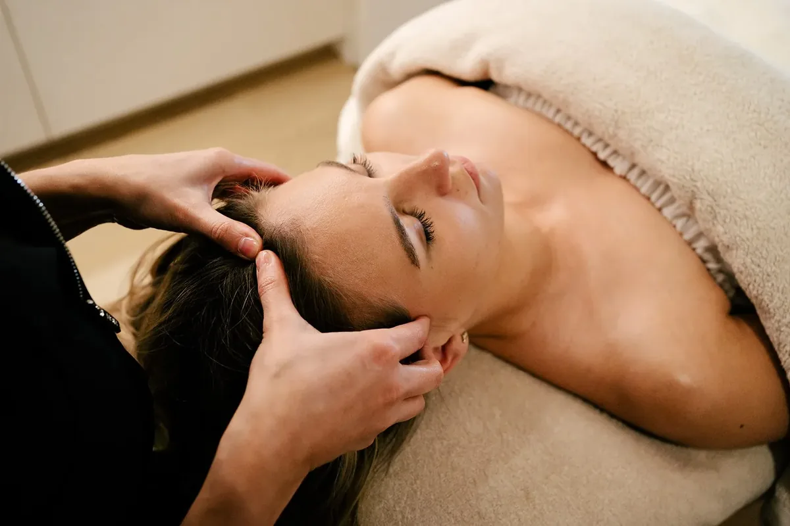
Veel klanten komen al jaren. Dat zegt meer dan wij ooit zelf kunnen schrijven.
De behandelingen zijn steeds super, ontspannend en met de juiste aanpassingen voor je huid. Op aanraden van Inge gebruik ik al enkele jaren de producten van Clephar en ze hebben mijn huid helemaal veranderd. Mijn huid voelt terug heel aangenaam aan.
Al sinds jaren is Inge degene die zorgt voor mijn "me-time". Haar kennis en aanpak is professioneel. Haar honger naar kennis en oplossen van allerlei "huidprobleempjes" is groot. Ze zoekt naar de juiste producten. Kortom ze verwent haar klanten.
Stuur me een berichtje of bel even. Weet je nog niet wat je huid nodig heeft? Dan starten we gewoon met een huidanalyse.
| Maandag | gesloten |
| Dinsdag | 9u tot 22u |
| Woensdag | 9u tot 22u |
| Donderdag | 9u tot 22u |
| Vrijdag | 9u tot 14u |
| Zaterdag | 9u tot 14u |
| Zondag | gesloten |
Mooi Mooi
Sint-Jan Berchmansstraat 29
2400 Mol
Ik maakte deze demo voor u om te tonen wat er kan. Na een kort gesprek maak ik er iets veel persoonlijkers van, helemaal naar uw wens.
Vrijblijvend. Ik kom langs of we bellen.
Op maat, op uw eigen domein.
Geen voorschot. U betaalt pas als alles klaar is.
Hosting, domeinnaam en kleine wijzigingen, zoals nieuwe openingsuren.
Omdat een voorbeeld meer zegt dan een mail. Zo ziet u meteen wat er kan, en het kost u niets.
Nee. Het gesprek is vrijblijvend. Vindt u het niks, dan is het daarmee gedaan.
Na ons gesprek staat uw site binnen 10 tot 14 dagen online.
Zeker. Uw domeinnaam kan gewoon blijven, de nieuwe site komt in de plaats van de oude.
Nee, dat doe ik op basis van ons gesprek. Eigen foto's zijn mooi meegenomen, maar niet nodig om te starten.